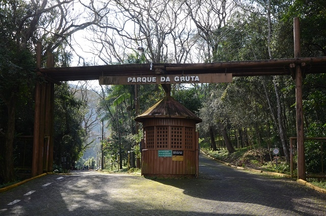
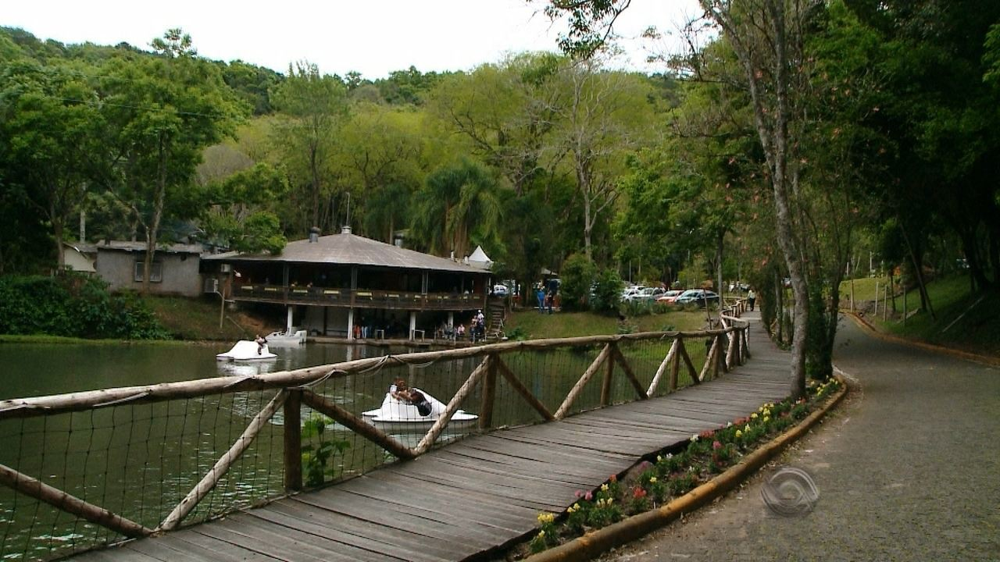

O Parque da Gruta é um dos recantos mais acolhedores da região. Localizado na Rua Capitão Pedro Werlang, a 2 km do centro da cidade, grande parte da área é de mata nativa.
A Gruta lá existente é de origem natural, resultante de um processo de erosão flúvio-pluvial. Foram encontrados vestígios de indígenas nos arredores da gruta, o que a remete ao nome anterior Gruta dos Índios.


Volte ao início